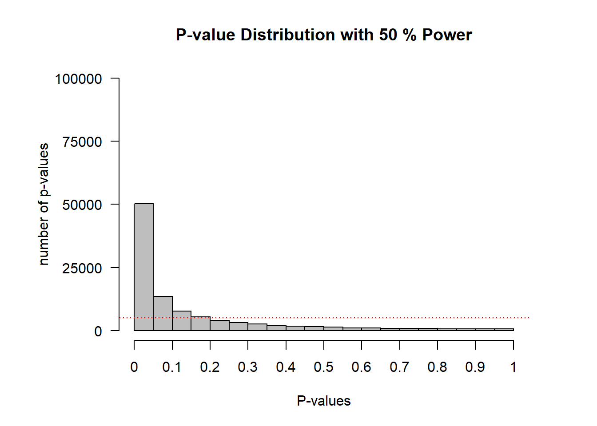
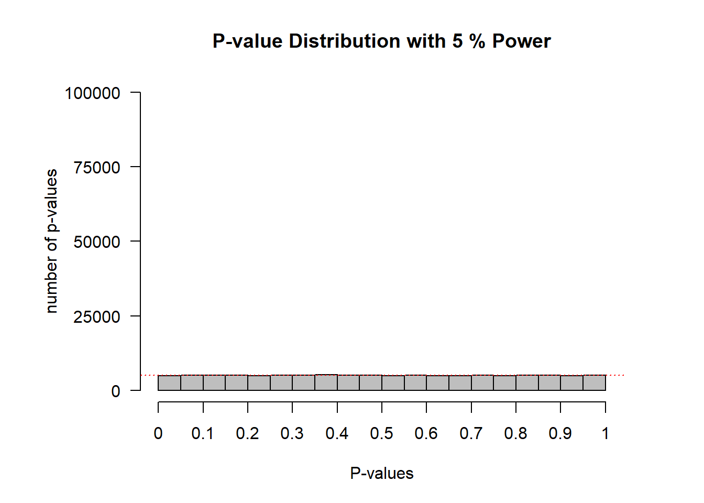

1.4 Which p-values can you expect?
Which p-values can you expect to observe if there is a true effect, and you repeat the same study one-hundred thousand times? And which p-values can you expect if there is no true effect, and you repeat the same study one-hundred thousand times? Take a moment to try to answer these two questions for yourself, before you will learn the answer in this assignment.
In your life, you might never do enough studies to get a feel for which p-values you should expect Luckily, we can easily simulate studies, calculate a p-value for each simulated study, and see what happens. Understanding which p-values you can expect is very important, because it will help you to better interpret p-values.
Which p-values you can expect is completely determined by the statistical power of the study, or the probability that you will observe a significant effect, if there is a true effect. The statistical power ranges from 0 to 1. We can illustrate this by simulating one-sample t-tests. The idea is that we simulate IQ scores for a group of people. We know the standard deviation of IQ scores is 15. For now, we will set the mean IQ score in the simulated group to 106, which we will compare to the average IQ score of all people (which is known to be 100 – that’s how IQ tests are normalized). We are testing if the people in our simulated sample have an IQ that differs from the average (and we know the correct answer is ‘yes’, because we made it so in the simulation).
#Set number of simulations
nSims <- 100000 #number of simulated experiments
M<-106 #Mean IQ score in the sample (will be compared with 100 in a one-sample t-test)
n<-26 #set sample size
SD<-15 #SD of the simulated data
#With a mean difference of 6, and SD of 15, and a sample size of 26, the test has 50% power)
p <-numeric(nSims) #set up empty variable to store all simulated *p*-values
bars<-20
#Run simulation
for(i in 1:nSims){ #for each simulated experiment
x<-rnorm(n = n, mean = M, sd = SD) #Simulate data with specified mean, standard deviation, and sample size
z<-t.test(x, mu=100) #perform the t-test against mu (set to value you want to test against)
p[i]<-z$p.value #get the *p*-value and store it
}
#Check power by summing significant *p*-values and dividing by number of simulations
(sum(p < 0.05)/nSims) #powerIn the simulation, we generate n = 26 normally distributed IQ scores with a mean of M (106 by default) and a standard deviation of 15. We then perform a one-sample t-test and store the p-value. If we would plot the distribution of
Figure 1.3: Distribution of p-values when power = 50%.
On the x-axis we see p-values from 0 to 1 in 20 bars, and on the y-axis we see how frequently these p-values were observed. There is a horizontal red dotted line that indicates an alpha of 5% (located at a frequency of 100.000*0.05 = 5000) – but you can ignore this line for now. In the title of the graph, the statistical power that is achieved in the simulated studies is given (assuming an alpha of 0.05): The studies have 50% power. P-value distribution when there is no effect
When there is no true effect, p-values are what is called ‘uniformly distributed under the null’. Every p-value is equally likely when the null hypothesis is true, and every bar in the graph will contain 5% of all the p-values (as indicated by the dotted red line). When there is no true effect, a p-value of 0.08 is just as likely as a p-value of 0.98. This is important to realize. When there is no true effect, p-values are uniformly distributed. When there is a true effect, the p-value distribution depends on the power, and the higher the power, the more p-values fall below 0.05, and the steeper the p-value distribution becomes.
Figure 1.4: Distribution of p-values when power = 50%.
1.4.1 Lindley’s paradox
Let’s take a look at just the p-values below 0.05. The goal of this section is to cure you from a bi-polar p-value disorder, where people incorrectly think all p-values > 0.05 are support for the null-hypothesis, and all p-values below 0.05 are support for the alternative hypothesis. We will perform a similar simulation as above, but now with very high (99%) statistical power. We will plot the p-value distribution, just zooming in on p-values just below 0.05.
Figure 1.5: P-value distribution for 99% power, where p-values just below 0.05 are more likely when H0 is true than when H1 is true

Look at the fifth bar from the left. This bar now contains all the p-values between 0.04 and 0.05. You will notice something peculiar. The grey line indicates the expected frequency in each bar, assuming the null hypothesis is true. See how the bar with p-values between 0.04 and 0.05 is lower than the grey line? We have simulated studies with 99% power. When power is very high, p-values between 0.04 and 0.05 are very rare – they occur less than 1% of the time (most p-values are smaller than 0.01). When the null hypothesis is true, p-values between 0.04 and 0.05 occur exactly 1% of the time (because p-values are uniformly distributed). Now ask yourself: When you have very high power, and you observe a p-value between 0.04 and 0.05, is it more likely that the null-hypothesis is true, or that the alternative hypothesis is true? Given that you are more likely to observe p-values between 0.04 and 0.05 when the null hypothesis is true, than when the alternative hypothesis is true, you should interpret a p-value significant with an alpha of 0.05 as more likely when the null hypothesis is true, than when the alternative hypothesis is true. I said I’d cure you from your bi-polar p-value disorder, didn’t I?
In our simulations, we know there is a true effect or not, but in the real world, you don’t know. When you have very high power, use an alpha level of 0.05, and find a p-value of p = .045, the data is surprising, assuming the null hypothesis is true, but it is even more surprising, assuming the alternative hypothesis is true. This shows how a significant p-value is not always evidence for the alternative hypothesis. For this reason, statisticians warn that p-values just below 0.05 (e.g., between 0.04 and 0.05) are at the very best weak support for the alternative hypothesis. If you find p-values in this range, consider replicating the study, or if that’s not possible, interpret the result at least a bit cautiously. If you are interested in the mathematical explanation of p-value distributions, instead of the current explanation that is based on simulations, you can read (Hung et al., 1997Hung, H. M. J., O’Neill, R. T., Bauer, P., & Kohne, K. (1997). The Behavior of the P-Value When the Alternative Hypothesis is True. Biometrics, 53(1), 11–22. https://doi.org/10.2307/2533093).
If you want to explore p-value distributions using the simulation code above, you can do so in this shiny app below.
Page built: 2020-08-15